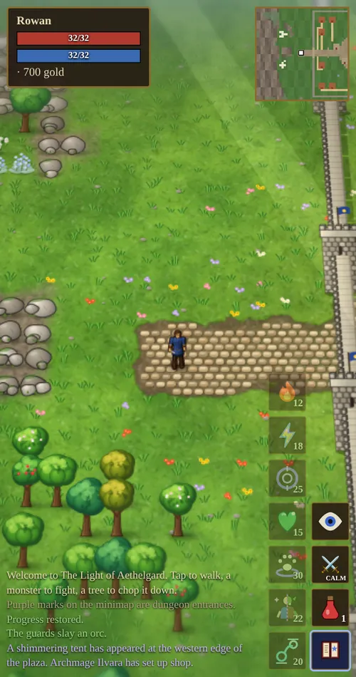

Chapter 5 of 12
Magic
Magic is learned from scrolls, paid for in reagents and mana, and drawn in the air with your own hand.
Learning spells
No one starts with magic. Spells come from spell scrolls, found in dungeon treasure chests (more often in deeper dungeons) and dropped by bosses. Read a scroll from your Backpack to learn its spell for good. A scroll for a spell you already know crumbles to dust.
Learning your first spell changes things:
- A mana bar appears under your health.
- Magery and Meditation appear in your skills.
- Archmage Ilvara’s tent appears at the western edge of the town square. She sells reagents, trains Magery, Meditation, Enchanting and Magic Resistance, and keeps the enchanter’s table.
- A spellbook button appears in the button column on the right.
The spell book
Tap the spellbook button to open or close a column of spell buttons beside it. The Spell Book in the main menu does the same job with more detail, and lets you choose which spells get a button. Fireball and Lightning need a monster within 8 tiles that you can see. If there is none, you are told “No target in range” and nothing is spent. Teleport asks you to tap where you want to go.

The seven spells
| Spell | Mana | Reagents | Effect |
|---|---|---|---|
| Fireball | 12 | Orc ear, Fire essence | Hits the target for 14–24 + Magery ÷ 4 damage and scorches anything beside it for 60% of that. Everything hit keeps burning for 4 seconds. |
| Lightning | 18 | Bone, Air essence | 22–34 + Magery ÷ 3 damage. 60% chance to jump to a second foe within 3 tiles for 60%. Often stuns. Can strike birds and bats in the sky. |
| Heal | 15 | Rat tail, Water essence | Restores 18–26 + Magery × 0.55 health. Only works when you are hurt. |
| Recall | 25 | Orc ear, Earth essence, Air essence | A 2.5 second chant that returns you to town. Any step or blow interrupts it. |
| Summon | 30 | 2 Bones, Earth essence, Water essence | Calls a familiar: a wolf, a bat or a raven. |
| Polymorph | 22 | Rat tail, Orc ear, Bone, Aether | Turns you into an orc, one of the undead, or a rat. |
| Teleport | 20 | Air essence, Mandrake root | Steps you through the air to a spot you can see, up to 12 paces away. |
Fireball and Lightning damage is also multiplied by your Intelligence bonus and any damage bonus from your gear. Your character sheet shows the exact ranges for the spells you know.
Casting
When you cast, your hero traces the spell’s glyph in the air with a glowing hand: a flame for Fireball, a jagged bolt for Lightning, a heart for Heal, a spiral for Recall, a paw for Summon, a split figure for Polymorph, and two linked circles for Teleport. When the glyph is complete it flares, and the spell is flung at your target or lifted upward.
Each cast uses mana and one set of reagents, and teaches Magery. A short pause follows before your next attack or spell. Summon and Polymorph first ask you to choose a familiar or a form, and the glyph is drawn only after you choose.
Teleport
Cast Teleport from the spell book or its button, and a banner asks you to tap a spot. You can go anywhere within 12 paces that you can see and could stand on: not into walls, water, trees or someone else’s place. On a computer a ring follows the pointer and turns red where you cannot go. Cancel or press Escape to stop aiming, and nothing is spent until you choose. Teleport works in dungeons and mines too.
Reagents
Every spell consumes its reagents each time you cast it. Collect them from monsters or buy them from Ilvara.
| Reagent | Where it drops | Ilvara’s price |
|---|---|---|
| Rat tail | Rats and ratmen | 3g |
| Orc ear | Orcs | 8g |
| Bone | Skeletons, the undead and many others | 12g |
| Fire essence | Fire elementals | 18g |
| Air essence | Air elementals | 18g |
| Water essence | Water elementals | 18g |
| Earth essence | Earth elementals | 22g |
| Aether | Monsters in dungeons, and bosses | 30g |
| Mandrake root | Grows wild in woods, jungles and meadows; Corvin sells it too | 10g |
Elementals live in the Elemental Sanctum, whose summoner, Veyra, drops a handful of every essence.
Mana and Meditation
Your mana is 10 + Intelligence. It comes back on its own, faster with higher Magery and much faster with higher Meditation. The character sheet shows your regeneration per second. Mana potions restore 30 or 80 at once.
Familiars
| Familiar | What it does |
|---|---|
| Spectral wolf | Fights beside you. It has 30 + Magery × 2.2 health and grows stronger as your Magery does. A wolf button switches it between guarding your side and charging ahead. Tap it to pet it. |
| Spectral bat | Does not fight. Heals you for a share of the damage you deal: 5% at 0 Magery, 25% at 100. |
| Spectral raven | Does not fight. Perches on your shoulder and gives +10 Intelligence. |
You can have one familiar at a time, and you dismiss it from the Spell Book. Familiars are spells. They are not the same as tamed animals, which are real creatures that stay with you (see Animals & Taming).
Polymorph
Polymorph lasts 45 seconds plus 0.3 seconds per point of Magery (75 seconds at 100). While you are in a form, creatures of that kind leave you alone unless you attack them.
| Form | Bonus | Who ignores you | Limits |
|---|---|---|---|
| Orc | +10 Strength | All orcs | |
| Undead | +10 Strength and Intelligence | Skeletons, ghouls, wraiths and liches | |
| Rat | +10 Dexterity and Intelligence | Everything except dragons | Cannot attack or cast; can still pick pockets while sneaking |
Next: Combat & War Mode.